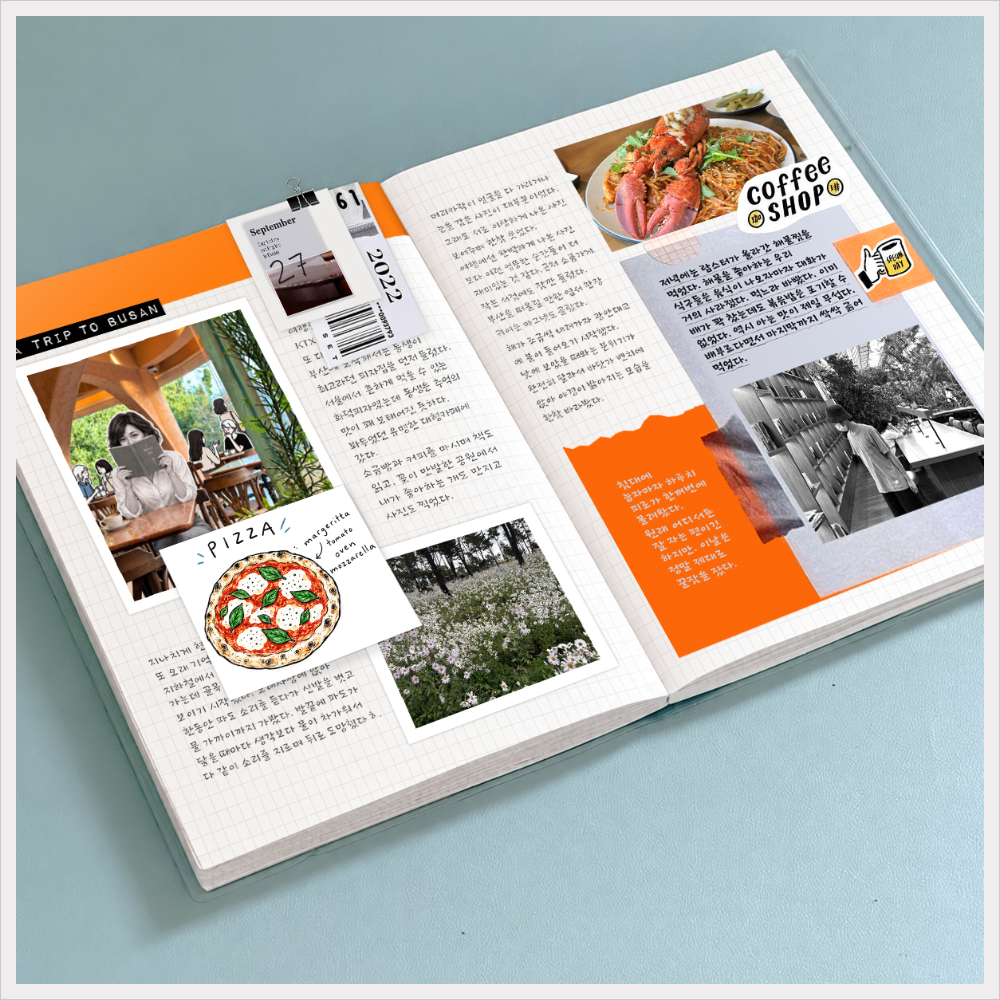

UI/UX DESIGNER AND CREATOR - YEOSANGHEE
MY WORK-DIARY

포토샵에서 대부분 편집(with AI-generated assets)
포토샵에서 전체 이미지를 만든 후 일러스트로 넣으면 좋을 만한 자리와 요소를 정하고
CHAT에서 생성받은 후 필요한 경우 포토샵에서 일부 수정후 넣었다.

일기 내용은 전체스토리를 작성한
후 Chat에게 윤문을 부탁했고 윤문
해 준 내용을 내가 다시 수정하는 식
으로 만들었는데 글에 유머스러운
스타일을 가미해줄 것을 요구했을
때 Claude에서 더 마음에 드는
결과물을 주었다.
다이어리에 Ribbon Marker(가
름끈)가 있으면 더 예쁠 것 같아서
수차례를 요구했지만 마음에 드는
결과물을 받지 못했다. 중요하지
않은 요소에 집착해 AI에 시간을
낭비한 첫 경험이였다.
텍스트를 사람이 직접 쓴 것처럼
배경이 투명한 calligraphy 이미
지로 만들어 달라고 요구한 후
포토샵에서 transform(skew)
했다.
이미지를 합성이나 편집, 수
정을 요구하면 그게 반복될
수록 이미지 손상과 변형이
커져서 원본을 넣어가며 고
화질로 이미지가 뭉개지지
않게 선명하게 생성해달라고
요구해야 했다.
여러차례 오랜 시간 생성을
요청할 경우 배경이나 이미지
전체가 검게 뭉그러져 물감이
번지듯 나오기도 했는데 지적
하면 문제점을 인정한 후 수정
하겠면서도 재차 망가진 걸
또 내놓는다.
2D든, 3D든 일러스트 캐릭터
를 요구하면 무조건 눈을 크게
만들고 작게 해달라고 여러번
요구해도 눈을 졸린 눈, 감기는
눈을 만들 뿐이다.